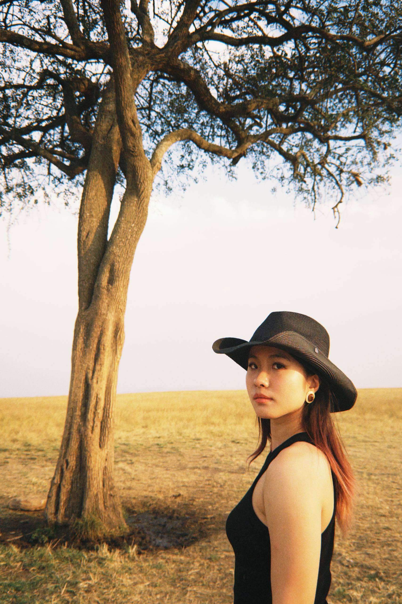

Hi,
I am Bian
My Chinese roots and my training in Singapore shape how I bring art and building science together through landscape design. I draw from history and visual culture, following a precise line to see how far my imagination will take it.

Education
2024 — present
National University of Singapore
Bachelor of Landscape Architecture
2021 — 2024
Temasek Polytechnic
Diploma in Architectural Technology & Building Services · With Merit
Professional Practice
Apr — Jun 2024
Shanghai Research Institute of Building Sciences
Environmental consulting internship
Apr 2023 — Mar 2024
Atelier Ten
Design communication & environmental consulting